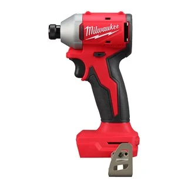
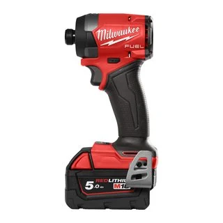
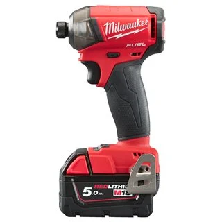
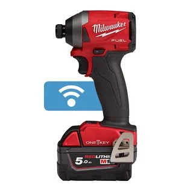
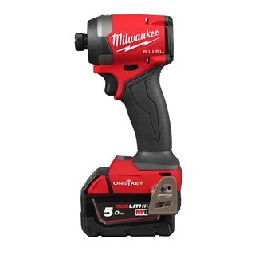

Impact Drivers Comparison
|  |  |  |  |  | |
| Model | M18 BLIDRC | M18 FID3 | M18 FQID | M18 ONEID2 | M18 ONEID3 |
| Voltage (V) | 18 | 18 | 18 | 18 | 18 |
| Description | Compact brushless driver | Gen4 4-mode flagship | SURGE hydraulic, low noise | ONE-KEY smart control | ONE-KEY gen4 performance |
| Motor | Brushless | Brushless | Brushless | Brushless | Brushless |
| Modes | Single speed | 4 modes | 4 modes | 4 modes (ONE-KEY) | 4 modes (ONE-KEY) |
| Max Torque (Nm) | 180 | 226 | 50 | 203 | 226 |
| Revolutions Per Minute (RPM) | 0-3400 | 0-1900/2800/3900/3900 | 0-900/2100/3000/3000 | 0-1900/2800/3600/3600 | 0-1900/2800/3900/3900 |
| Impacts Per Minute (IPM) | 0-4200 | 0-1200/3400/4400/4400 | 0-900/2100/4000/4000 | 0-1200/3400/4300/4300 | 0-1200/3400/4400/4400 |
| Length (Mm) | 130 | 113 | 150 | 117 | 113 |
| Weight (Kg) | 1.1 | 1.2 | 1.5 | 1.2 | 1.2 |
| LED Light | Yes | Yes | Yes | Yes | Yes |
Understanding Impact Driver Specifications
RPM (Revolutions Per Minute)
RPM indicates the rotational speed of the drill chuck. Variable speed control allows lower speeds for accurate, controlled drilling and higher speeds for fast, efficient drilling in softer materials such as timber.
IPM (Impacts Per Minute)
Indicates the number of concussive blows the tool delivers per minute. Higher IPM provides more driving power for tougher applications like driving long screws into hardwood or fastening through dense materials.
Torque (Nm)
Torque measures the rotational force produced by the motor. Higher torque enables the drill to drive fasteners efficiently and maintain performance under load, particularly when working with hardwoods or larger screws.